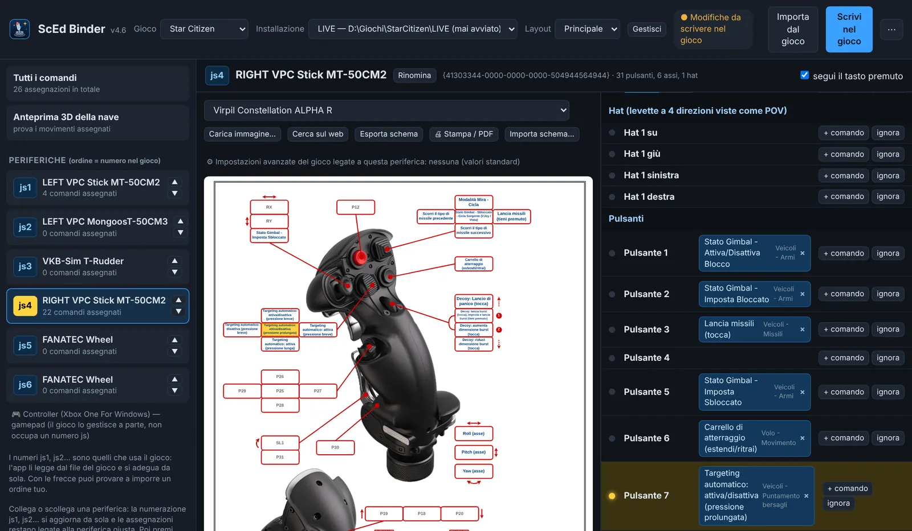
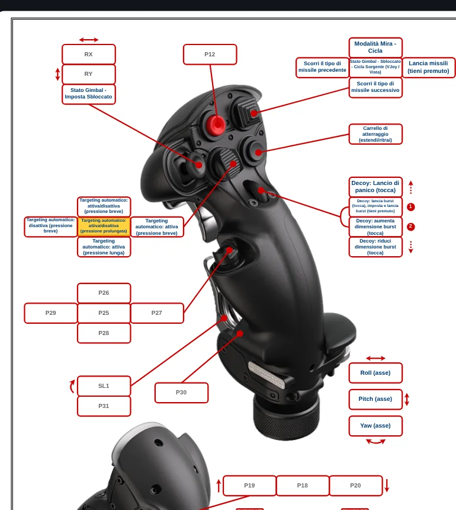
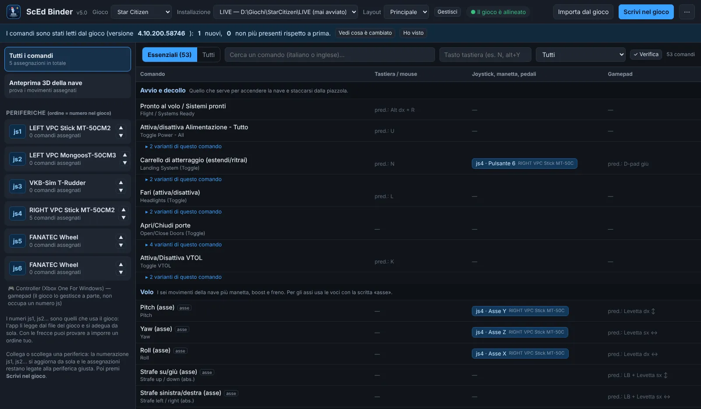
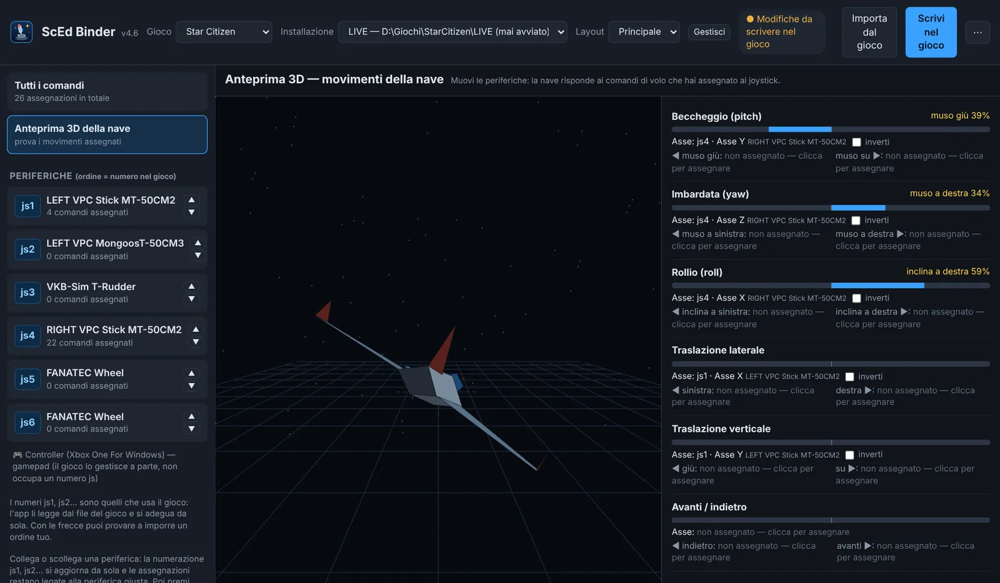
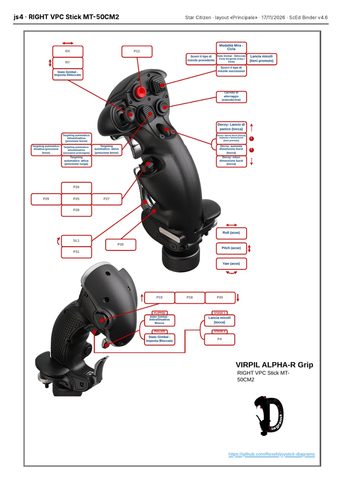
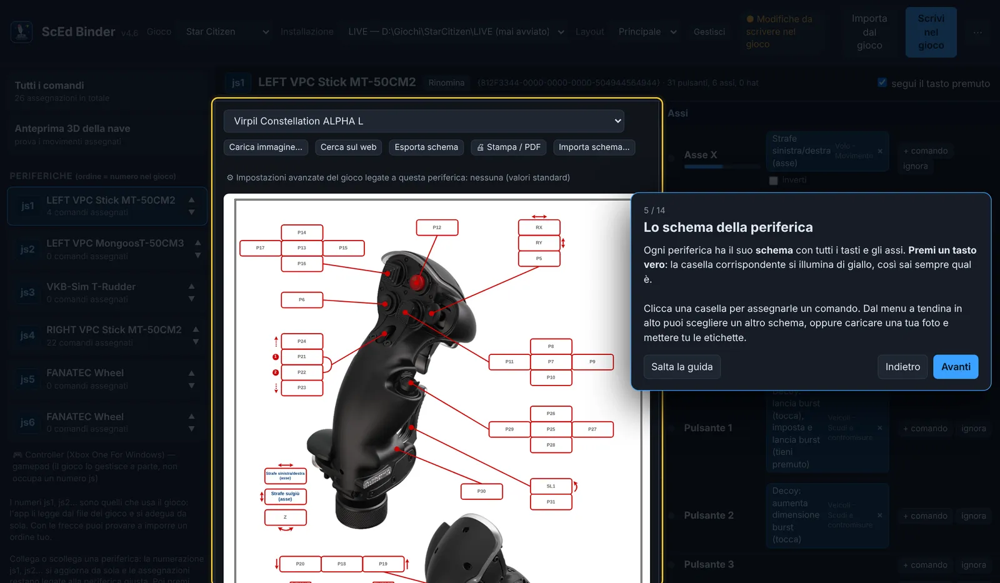

Assegna i comandi senza entrare nel gioco.
Per Star Citizen ed Elite Dangerous. ScEd Binder riconosce joystick, manette, pedaliere e gamepad, ti mostra ogni periferica con i suoi tasti e scrive lui il file dei comandi. In italiano, gratuito, per Windows.
Un solo file .exe: non installa nulla e non tocca i file del gioco, solo quello dei tuoi comandi.
Provalo qui. Premi un numero da 1 a 6 sulla tastiera, o tocca una casella: nel programma succede lo stesso con i tasti veri del tuo joystick.

Tre cose che nel gioco fanno perdere le serate.
L'elenco dei comandi è infinito, in inglese, e la periferica non la vedi.
Qui vedi lo schema del tuo stick o della tua manetta. Premi un tasto vero e si illumina la casella giusta; cerchi il comando in italiano e lo assegni.
Stacchi una periferica e i comandi finiscono sullo stick sbagliato.
Windows rinumera i joystick (js1, js2…) e il gioco si confonde. ScEd Binder lega ogni comando alla periferica, non al numero: quando la numerazione cambia, sistema tutto lui.
Curve, zone morte e inversioni saltano insieme ai numeri.
Le impostazioni avanzate del joystick restano agganciate alla periferica a cui appartengono, anche le curve personalizzate.
Quello che fa, schermata per schermata.
Lo schema di ogni periferica
60 modelli con la foto del produttore e 45 schemi disegnati: VKB, Virpil, Thrustmaster, Logitech, WinWing, MOZA, Honeycomb, MFG e altri.
- Il tasto che premi si illumina sullo schema e nell'elenco
- Più comandi sullo stesso tasto, doppio tocco, tieni premuto
- Inverti un asse o ignora un ingresso con un clic
- Se il tuo modello non c'è, carichi una foto e metti tu le etichette

Ogni comando ha un nome in italiano
Oltre 750 comandi di Star Citizen tradotti, con il nome inglese accanto. Li cerchi per nome, vedi i tasti predefiniti di tastiera e gamepad, e puoi partire dal comando: clicchi la casella e premi il tasto che vuoi usare.

Anteprima 3D della nave
Muovi gli stick e la nave risponde. Controlli beccheggio, rollio, imbardata e traslazioni prima di decollare, e inverti un asse se va al contrario.

Stampa o PDF da tenere sottomano
Lo schema di ogni periferica con i comandi assegnati, su un foglio A4. Una pagina per periferica, anche tutte insieme.

Una guida che ti accompagna
Al primo avvio una guida a passi ti mostra ogni funzione evidenziando il punto dello schermo di cui parla. Dopo ogni aggiornamento ti dice cosa è cambiato.
- Layout con un nome: volo, mining, combattimento
- Copia di sicurezza del file del gioco a ogni scrittura

Si tiene aggiornato da solo.
Il programma
All'avvio controlla se è uscita una versione nuova, la scarica, verifica che il file sia integro e passa a quella. Le tue assegnazioni restano. Se preferisci, lo disattivi dalle opzioni.
I comandi di Star Citizen
Quando il gioco si aggiorna, ScEd Binder rilegge l'elenco dei comandi direttamente dai file del gioco installato e ti mostra quali sono nuovi, quali sono spariti e quali tue assegnazioni vanno riviste.
Come si usa.
- Scarica e avviaMetti il file .exe in una cartella tua e aprilo. Accanto crea la cartella "dati" con le tue assegnazioni.
- Importa dal giocoControlla che l'installazione sia quella da cui giochi. L'app carica i comandi che hai già, così non parti da zero.
- Premi e assegnaClicca una periferica, premi il tasto che vuoi usare, scegli il comando. Oppure parti dal comando e premi il tasto.
- Scrivi nel giocoChiudi il gioco e premi "Scrivi nel gioco". Al prossimo avvio i comandi sono già lì.
Un minuto e mezzo di video.
Senza audio, con le didascalie. È girato con una delle prime versioni: oggi il programma fa qualcosa in più.
A che punto è, gioco per gioco.
Star Citizen
Tutti i comandi assegnabili, tradotti in italiano. Joystick, manette, pedaliere, volanti; tastiera, mouse e gamepad nell'elenco completo. Anteprima 3D, layout, impostazioni avanzate conservate.
Elite Dangerous
Joystick, manette e pedaliere, con i comandi in inglese e la traduzione sotto. Tastiera e mouse vengono conservati ma non modificati. Se lo provi, il tuo riscontro è prezioso.
Domande frequenti.
Windows dice "PC protetto da Windows". È normale?
Sì. Il programma è amatoriale e non ha una firma digitale a pagamento, quindi al primo avvio Windows avvisa. Clicca "Ulteriori informazioni" e poi "Esegui comunque". Il codice sorgente è pubblico e chiunque può controllarlo.
Tocca i file del gioco? Rischio qualcosa?
Scrive solo il file dei tuoi comandi, lo stesso che il gioco scrive quando li cambi dal menu, e prima ne salva sempre una copia nella cartella "dati\backup". Dall'archivio del gioco legge soltanto l'elenco dei comandi, senza modificare nulla.
Devo tenere il gioco chiuso?
Solo nel momento in cui premi "Scrivi nel gioco". Star Citizen, quando esci, riscrive il suo file dei comandi e cancellerebbe le tue modifiche.
Curve e zone morte si regolano dall'app?
Non ancora. Si regolano dal gioco; l'app le legge, le conserva e le tiene legate alla periferica giusta quando la numerazione cambia.
La mia periferica non ha lo schema. Posso usarlo lo stesso?
Sì. La periferica viene comunque rilevata con tutti i tasti e gli assi. Puoi caricare una tua immagine, mettere le etichette dove vuoi ed esportare lo schema per chi ha il tuo stesso modello.
Ho trovato un errore. A chi lo dico?
Apri una segnalazione nella pagina Issues del progetto, allegando il testo che trovi nel programma in "⋯ > Diagnostica periferiche" e, se puoi, una schermata.
Stasera vola, invece di rifare i binding.
Windows 10 e 11 a 64 bit. Gratuito e open source, licenza GPL.